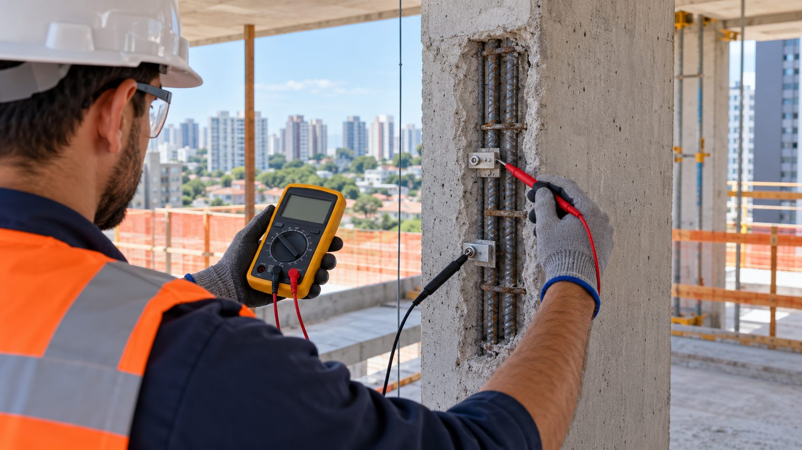

- WX2 Engenharia: laudos elétricos, SPDA e estudos de viabilidade para condomínios
O SPDA é o sistema de proteção contra descargas atmosféricas, conhecido no dia a dia como sistema de para-raios.
Em alguns condomínios, a estrutura de concreto pode ajudar o SPDA. A WX2 verifica se existe um caminho elétrico contínuo entre os pontos definidos e explica se as armaduras, descidas naturais e o aterramento estrutural podem ser aproveitados.
A medição de continuidade de armaduras é diferente da medição de carga ou consumo. Ela verifica se existe um caminho elétrico contínuo para uma possível solução de SPDA estrutural.
